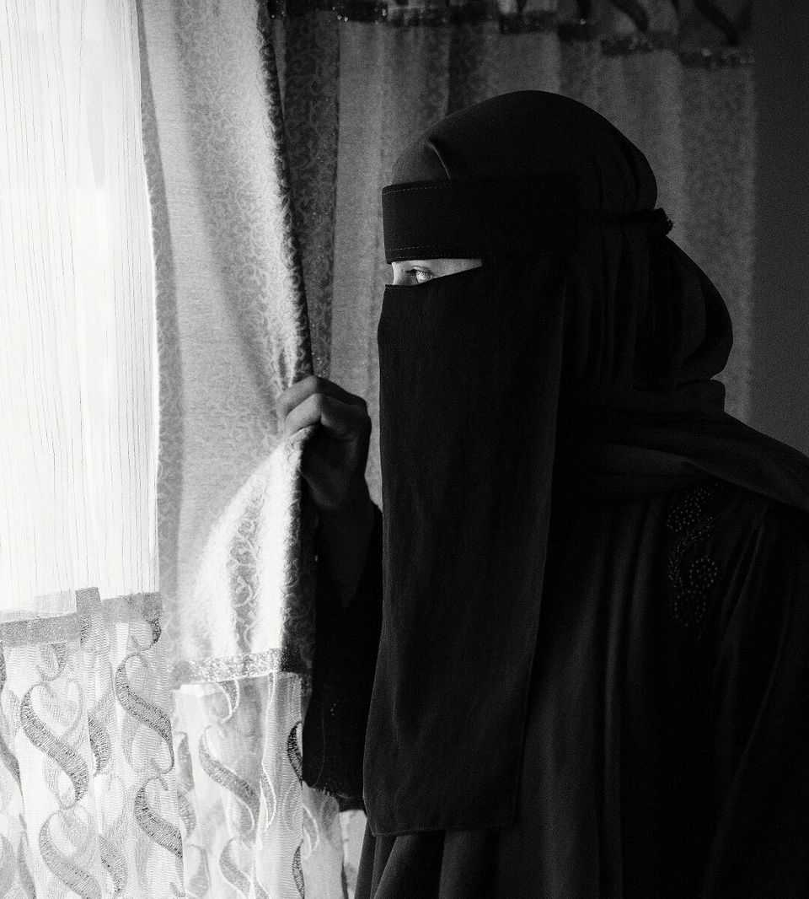

The Taliban are vile. Democracies must still engage with them
Five years after America’s exit, the Afghan regime is not going anywhere

Aug 13th 2026
Five years ago President Joe Biden pulled American troops out of Afghanistan. He was not forced to. America could have defended Afghanistan’s flawed but democratically elected government indefinitely, but chose not to. Voters were weary of America’s longest war, against the Taliban, a militia that controlled much of the countryside. Donald Trump set a timetable for pulling out; Mr Biden did so completely.
America’s looming departure prompted every Afghan with a gun to revise their expectations about who was likely to win their country’s civil war. Warlords switched sides; government soldiers abandoned their posts and melted away. The government fell almost immediately. The Taliban seized power almost unopposed. Desperate civilians fleeing their new rulers clung to the wheels of a departing American plane and plunged to their deaths.
The Taliban (whose name means “religious students”) had first seized power in 1996, and imposed a brutal blend of Islamism and premodern tribal custom, banning girls’ education and stoning gay people to death. America and its allies overthrew them after they hosted al-Qaeda, the terrorist group that attacked America with hijacked planes in September 2001. But Taliban fighters then waged a guerrilla war against the democratic system that America had introduced, murdering judges, police and anyone deemed a collaborator. When Mr Biden gave up, a two-decade effort at nation-building ended in humiliation. Other powers drew conclusions about America’s willingness to stand by its friends. Six months later, Vladimir Putin invaded Ukraine.
Five years on, America has largely forgotten Afghanistan. This is a mistake. The country is more likely to cause geopolitical trouble again if it is ignored. Its people will suffer even more. And it is more likely to fall into China’s or Russia’s orbit.
As our correspondent reports this week, after a 1,000km road trip inside the country, the Taliban are firmly in charge and the place is largely calm, bar intermittent sparring with its neighbour, Pakistan. But it is a grim stability.
Music is banned. Armed men rule the streets. The vice-and-virtue police dish out beatings to sinners, such as men with inadequate beards. Women are barred from workplaces, universities and travel without a male guardian. Girls are banned from secondary school and, since child marriage is now legal, many have been forced straight from the classroom into wedlock. How much poorer, sicker and sadder all this has made Afghans is hard to say; data-gathering is not a Taliban priority.
Most Afghans yearn for more freedom. Even many Talibs, after years in exile, no longer believe that the sky will fall if girls can spell. But hardliners have ruthlessly asserted control. The Taliban’s emir, Haibatullah Akhundzada, has recruited a loyal praetorian guard and grabbed lucrative mining contracts. More moderate Talibs are generally too weak or scared to challenge him. Some of the few who did had to flee.
America and Europe have tried to isolate the Taliban regime, refusing to recognise it, freezing Afghan central-bank reserves held abroad and slapping sanctions on officials. But this has achieved almost nothing. Taliban hardliners do not mind if Western diplomats and investors stay away, and will not adjust their ideology just to lay hands on the old government’s assets. So Western countries must try something new.
This means recognising some hard truths. First, the Taliban are not going anywhere. Second, if the West does not engage with them, other powers will. Russia has formally recognised them. China, India, Turkey and the United Arab Emirates work with them on issues such as mining and trade. The Taliban threaten to destabilise relations between India and Pakistan, since the latter fears that closer ties between Delhi and Kabul could leave it sandwiched between enemies.
Hints of a more hard-nosed Western approach are starting to be visible. Europeans still say the Afghan regime is beyond the pale, yet in June they invited Taliban officials to Brussels to discuss migrant flows and repatriating failed asylum-seekers. America quietly shares intelligence with them in the fight against even more extreme Islamist groups.
Other forms of engagement would also make sense. It is too soon to unfreeze the $4.2bn of Afghan central-bank reserves in Switzerland, which would surely be used to prop up the execrable emir. But donors should stop cutting humanitarian aid, which has fallen by around 70% since 2022. Nearly half the population needs it, by one estimate. It is also useful to have UN agencies on the ground, with eyes and ears to warn of looming famine, unrest or the theft of aid.
A second step should be sanctions reform. Many senior Talibs who were put under sanctions decades ago as terrorists are now ministers. That is having the unintended effect of locking the country out of the global financial system and starving it of private investment. Western firms fear to do any kind of business in Afghanistan, in case they fall foul of terrorist-financing rules. Changing this could boost growth, which might eventually ease the mass joblessness that threatens the country’s long-term stability.
A more controversial step would be diplomatic recognition. This does not imply approval. Decent governments recognise many regimes they despise. Rather, it means accepting the reality that the Taliban are likely to rule Afghanistan for the foreseeable future. Withholding diplomatic ties is not much of a bargaining chip—the Taliban do not think their legitimacy depends on the say-so of infidels. However, functioning embassies can watch out for terrorist threats, and create useful channels of communication, which in time could encourage the regime’s more moderate elements.
Make no mistake. Reform of this vile government must come largely from within, and could be the work of decades. But judicious engagement is likely to do more good than harm. So it is time for America and other democracies to hold their collective noses and talk to the Taliban. ■